一、Windows 抓包（Fiddler）
Fiddler 是一种网页调试代理工具，非常适合抓取 HTTP / HTTPS 的网络数据包。
1.1 监听原理
Fiddler 本质是是一个代理服务器进程，以此显示和调试经过 Fiddler 的所有请求和响应。
启动 Fiddler 后，会自动将自己设置为系统的代理服务器，系统的所有请求都会走 Fiddler 进程。
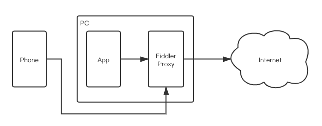
如果需要抓手机上相关请求的包，则需要确保手机和 PC 的请求可以互通（通常都位于同一局域网下）。
1.2 基本使用
Fiddler 运行时会将自动配置为系统的代理服务器，Fiddler 关闭时会自动取消该配置。如果 Fiddler 异常退出，可能会导致代理配置仍然存在，进而无法上网，此时只需要重启下 Fiddler 即可恢复。
在启动 Fiddler 后，可以在代理设置中看到本地代理的设置自动生效（如果没有启动 Fiddler 或者关闭 Fiddler 时，这里不会显示代理服务器）
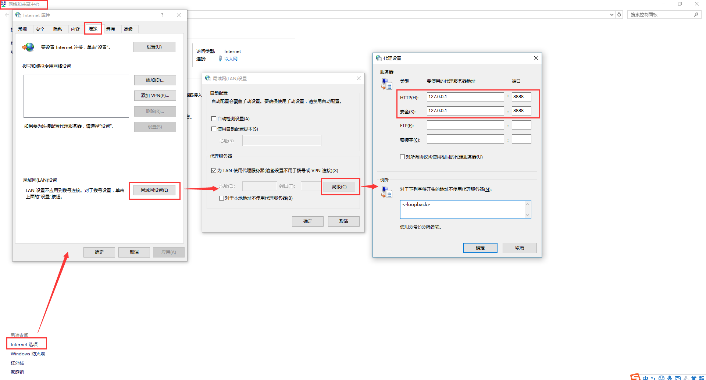
1.3 抓取 HTTPS 的包
Fiddler 安装好的时刻就已经可以自动且正确的抓取 HTTP 包了，但是对于 HTTPS 的数据包却无法抓取，这是因为 HTTPS 数据包经过了 SSL 的数据加密，Fiddler 只能拿到密文数据。
下图是 HTTP 和 HTTPS 包的比较：
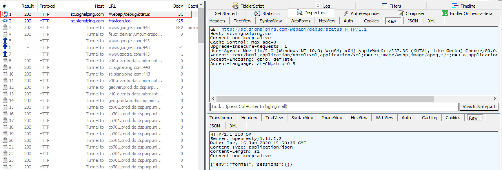
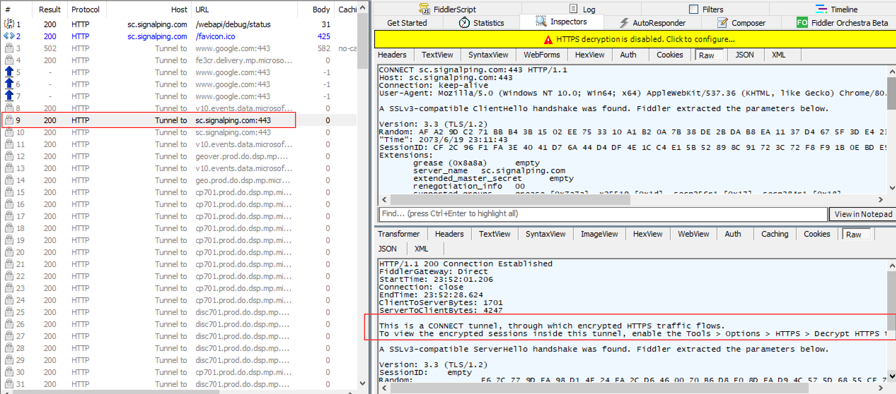
如果要支持抓取 HTTPS 数据包，则需要配置并绝对信任 Fiddler 的证书，其本质就是 Fiddler 作为中间人替换掉服务器的证书，客户端和 Fiddler 之间的 HTTPS 则是使用 Fiddler 的证书。
打开对于 HTTPS 的支持：
- Tools -> Options -> HTTPS
- 按照下图进行配置：
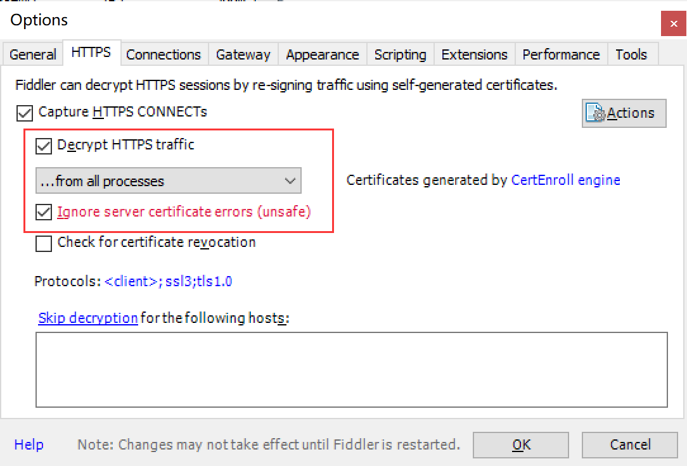
在勾选 Decrypt HTTPS traffic 选项后，会弹框提示安装并信任 Fiddler 的证书。
接下来重新发起 HTTPS 请求，可以看到解密后的信息：
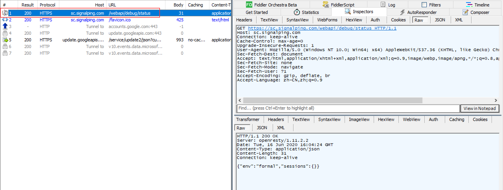
1.4 抓取手机的网络包
如果需要支持手机抓包，则需要配置手机连接到 Fiddler 代理服务器。
Fiddler 代理服务器的远程连接开关默认就是没有开启的，需要在 Tools -> Options -> Connections 中进行配置
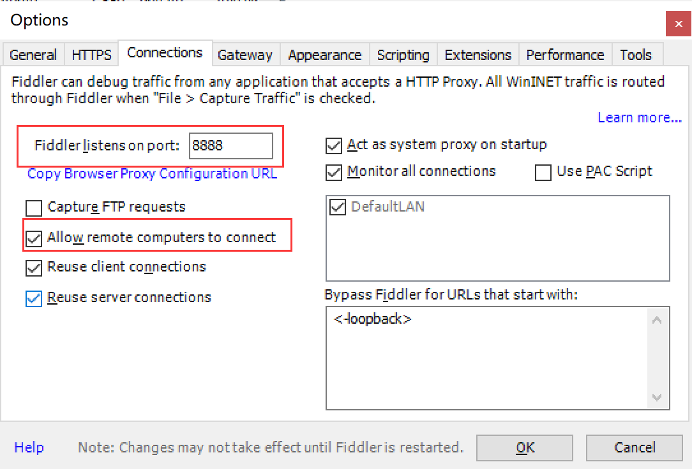
开启后需要重新启动 Fiddler 才能进行正常的代理。
手机端需要确保可以连接到 PC 机，并配置代理服务器，对于 IPhone 而言：
在配置好后，需要配置手机信赖 Fiddler 的证书：
- 在 safair 中访问
http://${proxy_ip}:${proxy_port} - 下载证书，在页面中单击
FiddlerRoot certificate
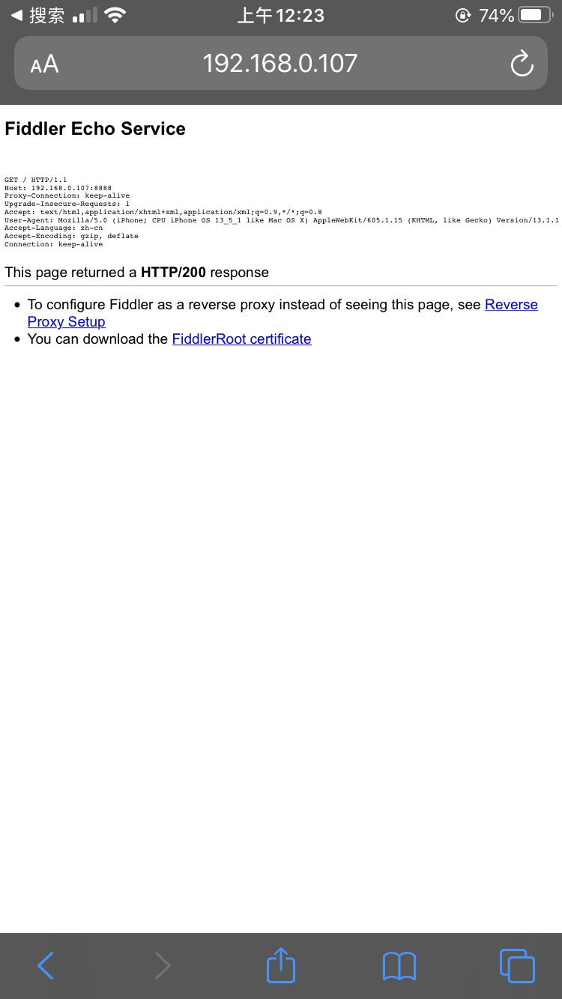 - 安装证书，证书下载完成后需要进行证书的校验和安装，路径为
设置->通用->描述文件与设备管理选择信任 FiddlerRoot 的证书即可。 - 信赖证书，需要配置对安装证书的信赖，路径为
设置->通用->关于本机->证书信任设置打开对 Fiddler 证书的信任。
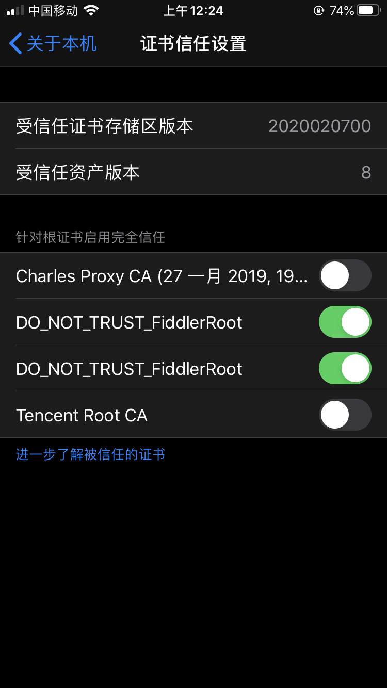
上述配置完成后，使用手机发起请求，即可在 Fiddler 中完成对手机抓包。
1.5 配置 Fiddler 认证
当使用 Fiddler 时，为了避免 Fiddler 服务器被局域网中的其他设备恶意连接，需要设置身份认证的账号和密码，确保一定程度的安全性。
Fiddler 需要配置一个用户账号名和密码，且需要用 base64 来存储。
具体步骤：
- 开启代理认证：
Rules -> Require Proxy Authentication - 确认账号密码：
${username}:${password} - 获得账号密码串的 base64，Fiddler 有自带工具：
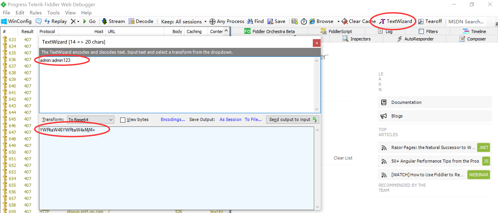 - 通过命令来配置账号和密码：
1
prefs set fiddler.proxy.creds ${md5}
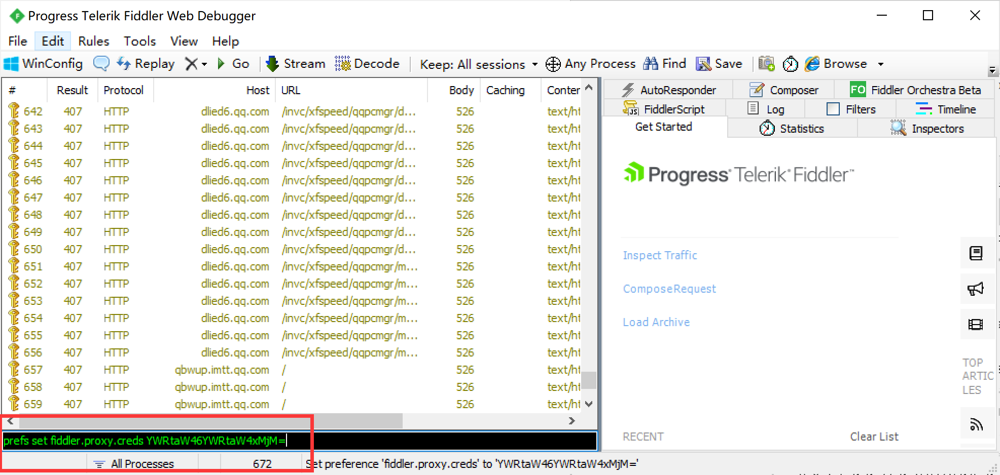
1.6 公司对 Fiddler 的配置
- 连接上 Tencent-Wifi 或 Tencent-LabWifi。
- Fiddler 配置服务器端口为 8080。
- 一定要配置 Fiddler 认证，否则会触发公司安全告警。
二、Windows 抓包（Wireshark）
Wireshark 类似于 Linux 的 tcpdump，是对网卡进行监听来获取网络数据包的。